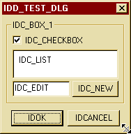
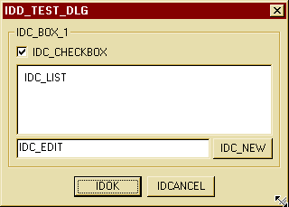

[ preface | about | techniques | a dynamic dialog | finally ]
Definiton:
A dynamic window is a window that automatically repositions its child controls when its size changes.
The opposite behaviour is called static.The classes described here will help you implementing dynamic dialogs, formviews, property sheets and control bars.
It replaces my former class tree "cdxCSizingDialog, ...".
Since I found out that not many of you seem to like reading documentation, I shortened this documentation.
If you have any suggestions, problems or questions that are not covered by this text, feel free to write an email to me.As a result, I won't discuss all my member functions but will give you a quick introduction in making windows dynamic.
The basic example will be a dialog.
The technique is nearly the same for property sheets, formviews and control bars.Here it is:

(picture#1)
We want to make it dynamic i.e. it should look like this if you change its size:

(picture #2)
The cdxCDynamicWnd class is a base class of all the ready-to-use classes as cdxCDynamicDialog.
To implement the resizing code, you need to tell the cdxCDynamicWnd object, which of your child controls should react on a resizing of your windows and how.To do so, there are now two techniques:
- Using AddSzControl():
As you may know from my former cdxCSizing... classes, you use one of the AddSzControl() overloads to make the dynamic window known to a child window of it.
In the upper example window, you would add the following lines to your OnInitDialog() code:
AddSzControl(IDC_BOX_1,mdResize,mdResize);
AddSzControl(IDC_LIST,mdResize,mdResize);
AddSzControl(IDC_EDIT,mdResize,mdRepos);
AddSzControl(IDC_NEW,mdRepos,mdRepos);
AddSzControl(IDOK,mdRelative,mdRepos);
AddSzControl(IDCANCEL,mdRelative,mdRepos);
- The first argument is the ID of the child control to make known to the dynamic window (note that we do not assign IDC_CHECKBOX since this control does not need to react on changes to the window's size).
- The second argument defines how the control should be treated if the window's width changes,
The third defines how to deal with height-changes:
You can choose among the following constants:
- mdNone (do nothing)
- mdRepos (move to left)
- mdResize (resize)
- mdRelative (keep relative position; e.g. keep centered if control was centered before)Among others, the following overloads of AddSzControl() are defined (the wnd parameter might be either an ID or a HWND object while a CWnd casts properly to a HWND):
AddSzControl(wnd, Mode mdX, Mode mdY);
AddSzXControl(wnd, Mode md);
AddSzYControl(hwnd, Mode md);If you are not satisfied with my predefined modes, you can make your own:
The following overload takes two bytes for each direction: They defined how much percent of the change in width should be added to the left side of the the child control (x1) and to the right side (x2) (equally for height changes):
AddSzControl(wnd, SBYTE x1, SBYTE y1, SBYTE x2, SBYTE y2);
AddSzXControl(wnd, SBYTE x1, SBYTE x2);
AddSzYControl(wnd, SBYTE y1, SBYTE y2);My predefined modes have the following values:
- mdNone is (x1=0,x2=0)
- mdRepos is (100,100)
- mdResize is (0,100)
- mdRelative is (50,50)Depending on the base class you use the following functions are suitable places to call AddSzControl():
- Dialog: OnInitDialog()
- FormView: OnInitialUpdate()
- PropPage: OnInitDialog()
- Using my new dynamic maps:
Some people noted that it is annoying to use the AddSzControl() method since they don't need OnInitDialog() for example - only for the AddSzControl() code.
Therefore I added the dynamic maps feature.
To use it, add the line DECLARE_DYNAMIC_MAP() to your class definition, and add something like:
BEGIN_DYNAMIC_MAP(CTestDlg,cdxCDynamicDialog)
DYNAMIC_MAP_ENTRY(IDC_BOX_1, mdResize, mdResize)
DYNAMIC_MAP_ENTRY(IDC_LIST1, mdResize, mdResize)
DYNAMIC_MAP_ENTRY(IDC_EDIT, mdResize, mdRepos)
DYNAMIC_MAP_ENTRY(IDC_NEW, mdRepos, mdRepos)
DYNAMIC_MAP_ENTRY(IDOK, mdRelative, mdRepos)
DYNAMIC_MAP_ENTRY(IDCANCEL, mdRelative, mdRepos)
END_DYNAMIC_MAP()If you compare these lines to the above AddSzControl() statements, you'll note that they act similarily.
The following macros are defined:
DYNAMIC_MAP_ENTRY(ID,MODEX,MODEY)
DYNAMIC_MAP_XENTRY(ID,MODEX)
DYNAMIC_MAP_YENTRY(ID,MODEY)
DYNAMIC_MAP_ENTRY_EX(ID,X1,Y1,X2,Y2)
DYNAMIC_MAP_XENTRY_EX(ID,X1,X2)
DYNAMIC_MAP_YENTRY_EX(ID,Y1,Y2)
- A dialog:
I suggest that you used your dialog resource editor to design a dialog as shown in picture #1.
The names of the controls should indicate their control IDs.
Important note #1: Every control that should dynamically move need a unique ID (=> it is not possible to move static texts with IDC_STATIC).
Moreoever, I assume that you have created a dialog class called "CTestDlg" for this dialog.
- Resizable border and WS_CLIPCHILDREN for your dialog:
Please open your dialog's properties (in the resource editor), go to the tab "Styles" and change the "Border" into "resizing" (otherwise use won't be able to resize your dialog although it might be dynamic by code).
Then, switch to the first tab and activate "clip children".
NOTE: If "clip children" is on and you use group boxes, these boxes need the WS_EX_TRANSPARENT style (can be found at the "extended styles" tab of the group box).
This is not a problem with these classes but with the MFC at all !
- Changing the base-class of your dialog:
Open your dialog classes header file, add an
#include "cdxCDynamicDialog.h"
to its head and replace all "CDialog" by "cdxCDynamicDialog" in both your header and implementation file.
- Define how childs should be moved:
Since this release, you can choose among the two techniques described above to implement this behaviour (they can be mixed if you need that).
See above to learn how to do so.
- Compile and run.
- Open your constructor and try to add
ModifyFlags(flSWPCopyBits,0)to your code.
This is an anti-flickering option which does not work with all childconstrols, unfortunately - thus you may need to disable it one time.
Once your code runs, you can modify the behaviour of your class in many ways.
The options you may want to make use of are:
- Disabling the size icon.
- Setting a window's minimum and maximum size.
- Advanced anti-flickering.
- Advanced AddSzControl() code.
- Virtual functions that you may like to overload for a more sofisticated dynamic reaction.
- Default resizing values and many more...
Check the flags, available to you, check functions and if you don't make it work, drop a note to me.
The classes described in this document have been written by
Hans Bühler, codex design (w)1997 - 2000
hans.buehler@topmail.deYou are free to use and modify the code and the classes but I would like you to note the author (that's me :) in your product's documentation at any place, if possible.
You use this code at your own risk.
Any damange caused by the use or misuse of this code is the sole responsibility of the user.[ back to top of this document ]